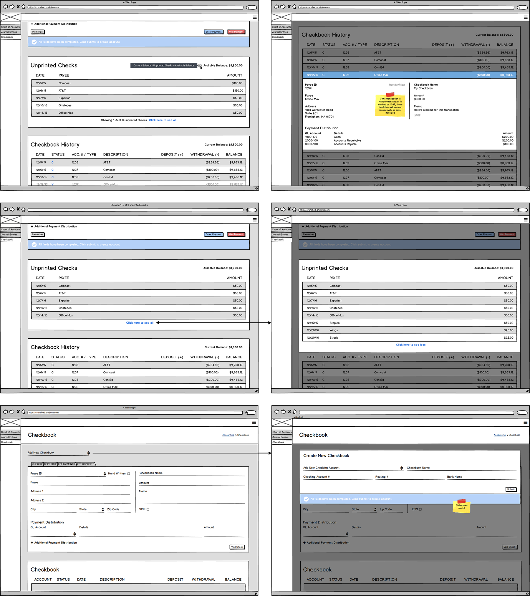
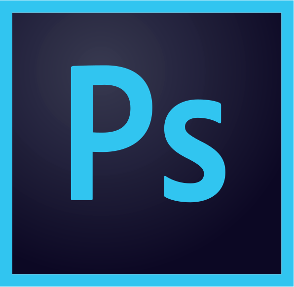

The trouble with so many of us is that we underestimate the power of simplicity.
- Robert Stuberg
- Robert Stuberg
Contact
You can always reach me at jslavuter@gmail.com, promise.
You can always reach me at jslavuter@gmail.com, promise.

Helping SEO's and Content Marketers conduct analysis on their visibility in search results and the performance of their web content.
Providing users insights on how their web content appears in search results (ie: local results for local businesses, or answer boxes to answer questions.)
Previously known as Content Types, this feature surfaced information on how results appeared in search results. It was a good starting point, but there plenty of gaps in functionality, and the design was stale.

Tools used:
Fortunately, our users are vocal about their needs and pain points. After reviewing product feedback, I collaborated with my product manager to organize it into four major themes:

Tools used:
In the first week, I outlined what information would be most valuable to surface to users, and considered how best to build the right story.

Tools used:
Over the next month, I went through the process of iterating and soliciting feedback on design concepts, including various internal and customer-facing validation sessions.

Tools used:
After several rounds of testing, my participants left me with clear direction:
Tools used:
The summary widget evolved to support information on all result types. Additionally, users could now see their ownership for each result type. And lastly, users could now start analysis workflows for each indvidual result type.

Tools used:
Understanding ownership trends provides users with a better understanding of their optimization efforts. Incorporating a view to focus on individual result types to see how result type ownership changes was vital.

Tools used:
The table widget was updated to support those users that need to see appearance and their ownership of result types. Additionally, users could now view contextual details about each keyword - like top rankers, and whether competitors own any results. And lastly, users could now drill into a Keyword Details feature, closing the loop on their workflows.

Tools used:
For those users that need some addition information on result types, I wanted to bring our knowledge base to the forefront. I coded a custom a set of contextually accessible educational guides - supporting our less seasoned users to maximize the value of this feature.

Tools used:
After a successful beta and eventual GA release, this feature saw a jump in user engagement by approximately 100%.

Result Types is frequently used by the majority of our users. Feedback is still rolling in, and I'm monitoring user engagment to help prioritize the next set of improvements.
Check out the feature highlight on Conductor's blog
In the meantime, I'm working on a concept to support reporting on multiple contexts, while exploring a streamlined visual design.

It's new kind of accounting platform. Geared towards small businesses, this application is set to allow anyone to fully manage their business finances like the pros.
Considering this is the first phase, we spent a lot of time figuring out how to best position the application and what our main priorities would be.
Tools used:
Sprint preparation started with grooming. A shared understanding of each story was (and always is) critical during the sprint planning process. Here's an overview of a successful sprint:

Tools used:
Once a story was groomed, it was off to the races with wireframes. Using principles from atomic design, I built up elements organically, with the notion of reuse in mind. Sometimes, we would iterate a few times in a matter of days. The important thing was to expand on an idea quickly and analyze until the best structure 'evolved' to fit our needs.
Tools used:
Sometimes, product owners want to see a close approximation to actual renderings of their application in development. In this case, I break out Photoshop or Sketch. This is less agile, but can be useful for presentations, decision-making, and keeping product owners happy.

Tools used:
Creating mockups is all well and good, but a part of product development is figuring out how all of the parts connect. A part of user experience is the interactions users engage in, so it's important to get the behaviors right.

Tools used:
When our design direction is set and development kicks into high gear, I'll often work directly with engineers, revising interfaces and polishing things up so we can make sure that all the small details are accounted for.

Tools used:
All of our progress is founded upon rapid and constant feedback. Working with product owners, stakeholders and end users allows me to gather lots of data so that I can work with the engineering team to iterate with an impact.

Crunched is currently open for beta testing. While we're wrapping up our first phase, we're already grooming in preparation for the next phase, as well as incorporating user feedback.
Predicata is a hospital/clinic inventory & contract management tool. The beauty of this application is that on top of standard tracking, these institutions will be able to instantly analyze their invoices against contracts.
Initial research was provided to us and I've had a good amount of time to conduct my own research efforts with potential users in various roles.
Tools used:
This project involves a lot of team members and a lot of moving parts. Since industry knowledge is a high friction area, I make sure to conduct as much research as I could before getting started. My goal was to familiarize myself with Predicata's current work flows, tool sets, and aspirations for the application we'd develop for them. Here's an overview of a successful sprint:
Tools used:
Research and prioritization are vital to the start of any development effort. When I work with various product owners, we create a backlog to outline a phase of a project. I help create user stories based on needs and priorities to give users a voice, provide direction to the engineers, and realize business value for my clients.

Tools used:
Research and prioritization are vital to the start of any development effort. When I work with various product owners, we create a backlog to outline a phase of a project. I help create user stories based on needs and priorities to give users a voice, provide direction to the engineers, and realize business value for my clients.

Tools used:
With this project, we had lots of variables. Multiple stakeholders (along with the product owner), multiple user roles, and multiple partners to collaborate with. Their process is complex, so we packed in as many smart features as possible to keep up with their needs. Oh, and the wireframes grew in fidelity too.

Tools used:
Aside from static wireframes, which might show the structure and some basic connections between views, I use prototyping tools to create a much more true-to-life experience. I use solutions like Marvel or Invision to give product owners something that they can interact with, the way they would with the finished app.


Tools used:
From creating to curating - there's no shortage of tools out there. The goal is a discussion and ultimately a decision establishing design direction for the application. For some projects, I use StyleTiles to display a "tasting menu" of various visual elements. For this project, I used Sketch to create the visual elements and ended up rendering various high-impact pages at the product owner's request.

Tools used:
Polish isn't easily achieved; it takes a keen eye and a willingness to design for how people internalize and interact. I attempted to focus on interaction design with the hope of providing the user an engaging and rewarding experience.
Predicata is about to reach completion of its first phase and will be pitched to a few major potential customers. While I work with engineers to tighten up the design, we are also conducting user testing, which will help us prioritize the next major epics and stories for phase 2.
Cognex creates image recognition hardware & software for a variety of industries. From barcode scanners to OCR systems, they combine a multitude of sensors in their devices for their customers to gather large amounts of data.
As consultants, we have been contracted to update their sales application. Since this is not a greenfield project, we've been tasked with 1) modernizing their application design, and 2) adding functionality to it.
Tools used:
This is a relatively low-complexity project, so we're mostly focused on the design. That being said, it's a sales application, so refined interfaces are an absolute priority. Here's an overview of a successful sprint:

Tools used:
Considering this isn't a greenfield project, one of my first tasks was to assemble an interface inventory of their current application. Using a powerpoint template and basic screenshots, I was able to create an inventory and better understand the level of visual cohesiveness in the current app.

Tools used:
Cognex is an industry leader, providing technology to bring their customers' processing power into the 21st century, so their own sales app should reflect a forward-thinking design. Using screenshots of their current app, I was able to leverage Marvel to annotate right on top of their interfaces, allowing me to present feedback in a context that is familiar to the product owner.

Tools used:
After the design audit, my goal was to transform the current interface by applying industry standards, removing bloat from the UI and making it more intuitive for the user. Adhering to the Cognex brand guidelines, I synthesized an interface that would feel familiar, while taking cue from some of the most successful apps out there.

Tools used:
Having quite a few user flows completed in preparation for a presentation to the product owner and their team, I decided to use Invision as my solution. The benefit of switching to Invision is that I was able to use their Viewer companion app directly on an iPad, providing a realistic experience for the client.


*** Another bonus is that they're partnered with UserTesting to provide their integrated user testing solution from the prototype interface. I will definitely be looking into this option when the first set of prototypes is complete.
The Cognex redesign is still very much in its nascent stages. Currently, I am tweaking the design while collaborating with their in-house designer. Once the designs have been approved, their staff will test out the prototype and provide initial feedback. Lather, rinse, repeat.